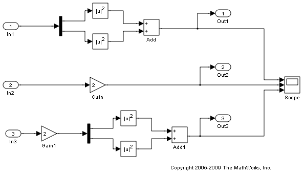
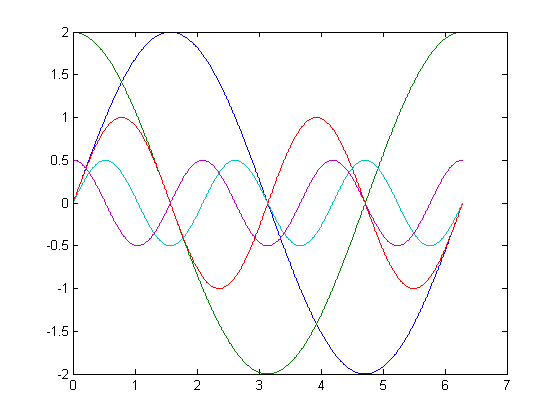
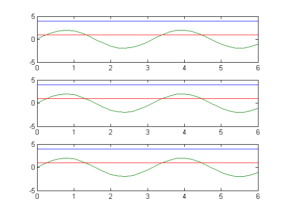

Using MAT-Files to Feed Data to Inport Blocks for Rapid Simulations
The RSim -i option in Real-Time Workshop® lets you use a MAT-file as the input data source for Inport blocks for rapid simulations. The data in such a MAT-file can be presented in any of the following formats:
(1) One variable that defines a time/input data matrix of double values.
(2) One variable that defines a structure that uses any combination of
Simulink(R) data types. (3) Multiple variables, each defining a structure that uses any combination
of Simulink data types.This flexibility lends itself well to applications for which you must run simulations over a range of input data stored in different data files. This demo explains how to use this feature.
Contents
Step 1. Preparation
Make sure the current directory is writable. This demo creates files.
[stat, fa] = fileattrib(pwd); if ~fa.UserWrite disp('RSim -i option Demo must be run in a writable directory'); return; end
Open the model and configure it to use the Real-Time Workshop RSim target. For more information on doing this graphically and setting up other RSim target related options, look here.
mdlName = 'rtwdemo_rsim_i'; open_system(mdlName); cs = getActiveConfigSet(mdlName); cs.switchTarget('rsim.tlc',[]);
Step 2. Configure the Inport Blocks
To use the RSim -i option, you must configure each Inport block properly. You can double-click an Inport block to view its properties. By default, Inport blocks inherit their properties from downstream blocks. Before you can import data from external MAT-files, you must set the parameters of each Inport block to match the data in the MAT file. In most cases, the following parameters of an Inport block must be set: Interpolate Data, Port Dimensions, Data Type, and Signal Type. For more information on these parameters, click the Help button. In this demo model, three Inport blocks exist. We want Inport 1 and Inport 2 to interpolate between data, and Inport 3 to not interpolate. The dimension of the Inport blocks are 2, 1, and 2, respectively. All signals are real. The settings are as follows:
for i =1:3 portName =['/In', num2str(i)]; Interp = get_param(strcat(mdlName,portName),'Interpolate'); PortDimension = get_param(strcat(mdlName,portName),'PortDimensions'); DataType = get_param(strcat(mdlName,portName),'DataType'); SignalType = get_param(strcat(mdlName,portName),'SignalType'); s1= sprintf('For inport %s ', portName(2:4)); disp('-----------------------------'); disp(s1); s2= sprintf('The interpolation flag is %s', Interp); disp(s2); s3 = sprintf(' The port dimension is %s', PortDimension); disp(s3); s4 = sprintf(' The data type is %s', DataType); disp(s4); s5 = sprintf(' The signal type is %s\n', SignalType); disp(s5); end
-----------------------------
For inport In1
The interpolation flag is on
The port dimension is 2
The data type is double
The signal type is real
-----------------------------
For inport In2
The interpolation flag is on
The port dimension is 1
The data type is double
The signal type is real
-----------------------------
For inport In3
The interpolation flag is off
The port dimension is 2
The data type is double
The signal type is real
Step 3. Build the Model
Build the RSim executable for the model. During the build process, a structural checksum is calculated for the model and embedded into the generated executable. This checksum is used to check that any parameter set passed to the executable is compatible with it.
evalc('rtwbuild(mdlName)');
Step 4. The Input Signals
Once the Inport block is configured, the data file should be prepared based on the Inport blocks. The following figure shows the input signals to be used.
t=[0:0.01:2*pi]';
s1 = [2*sin(t) 2*cos(t)];
s2 = sin(2*t);
s3 = [0.5*sin(3*t) 0.5*cos(3*t)];
figure(1);
plot(t, [s1 s2 s3]);
disp('The following figure displays the input signals.');
The following figure displays the input signals.
Step 5. Prepare the MAT-File
Generally, the MAT-file can be created from a workspace variable. The RSim -i option supports three data file formats:
1) The MAT-file contains one variable in TU matrix format of doubles. For this format, the first column is the time vector and the remaining columns are input vectors. The number of columns in the TU matrix equals the sum of the dimensions of all the root Inport blocks plus 1. The following MATLAB code generates a MAT-file containing one variable var_matrix in TU matrix format. Note that you can use this format only if all input ports in your model have the same data type.
t=[0:0.1:2*pi]'; Ina1 = [2*sin(t) 2*cos(t)]; Ina2 = sin(2*t); Ina3 = [0.5*sin(3*t) 0.5*cos(3*t)]; var_matrix = [ t Ina1 Ina2 Ina3]; save rsim_i_matrix.mat var_matrix; disp('rsim_i_matrix.mat contains one variable var_matrix in TU matrix format.');
rsim_i_matrix.mat contains one variable var_matrix in TU matrix format.
2) The MAT-file contains one variable in structure format. For this format, the variable must contain two fields called time and signals. If one of the Inport block sets Interpolate Data to On, then the time field of the variable must not be an empty vector. Also, the width of the signals must equal the total width of the Inport blocks. The following code generates a MAT-file that contains one variable var_matrix in signal variable structure format. This format is more flexible than the TU matrix format because it can support input ports with different data types.
t= [0:0.1:2*pi]'; var_single_struct.time = t; var_single_struct.signals(1).values(:,1) = 2*sin(t); var_single_struct.signals(1).values(:,2) = 2*cos(t); var_single_struct.signals(2).values = sin(2*t); var_single_struct.signals(3).values(:,1) = 0.5*sin(3*t) ; var_single_struct.signals(3).values(:,2) = 0.5*cos(3*t) ; v=[var_single_struct.signals(1).values var_single_struct.signals(2).values ... var_single_struct.signals(3).values ]; save rsim_i_single_struct.mat var_single_struct; disp('rsim_i_single_struct.mat contains one variable var_single_struct in') disp('struct format.');
rsim_i_single_struct.mat contains one variable var_single_struct in struct format.
3) The MAT-file contains multiple variables in structure format. For this format, the number of variables equals the number of Inport blocks. Different variables can have different time vectors. The following code generates a MAT-file that contains multiple variables, each in structure format. This is the most flexible format because it allows each Inport block to have its own time vector.
t= [0:0.1:2*pi]'; Inb1.time = t; Inb1.signals.values(:,1) = 2*sin(t); Inb1.signals.values(:,2) = 2*cos(t); t= [0:0.2:2*pi]'; Inb2.time = t; Inb2.signals.values(:,1) = sin(2*t); t= [0:0.1:2*pi]'; Inb3.time = t; Inb3.signals.values(:,1) = 0.5*sin(3*t); Inb3.signals.values(:,2) = 0.5*cos(3*t); save rsim_i_multi_struct.mat Inb1; save rsim_i_multi_struct.mat Inb2 -append; save rsim_i_multi_struct.mat Inb3 -append; disp('rsim_i_multi_struct.mat contains three variables Inb1\Inb2\Inb3'); disp('in struct format. Note that command save -append option must be'); disp('used to generate the MAT-file in order to preserve the order of'); disp('the variables in the MAT-file generated. Note that the command:') disp('save rsim_i_multi_struct.mat Inb1 Inb2 Inb3 will not guarantee'); disp('the order of the variables in MAT-file and should not be used'); disp('to generate the MAT-file.');
rsim_i_multi_struct.mat contains three variables Inb1\Inb2\Inb3 in struct format. Note that command save -append option must be used to generate the MAT-file in order to preserve the order of the variables in the MAT-file generated. Note that the command: save rsim_i_multi_struct.mat Inb1 Inb2 Inb3 will not guarantee the order of the variables in MAT-file and should not be used to generate the MAT-file.
Step 6. Run 3 RSim Simulations Using Different Files and Plot the Results
RSim -i options can also be used for batch mode simulation. Just prepare all the MAT-files and run the RSim target with different MAT-files.
figure(2)
fileName = ({'rsim_i_matrix', 'rsim_i_single_struct', 'rsim_i_multi_struct'});
for i=1:3
% bang out and run a simulation using new parameter data
name = fileName(i);
runstr = ['.', filesep, 'rtwdemo_rsim_i -i ',char(name),'.mat', ' -v'];
evalc('system(runstr)');
pause(0.5);
% load simulation data into MATLAB(R) for plotting.
load rtwdemo_rsim_i.mat;
subplot(3,1,i);
axis([0,6, -5, 5]);
plot(rt_tout, rt_yout);
hold on
end
disp('This part of the demo illustrates a sequence of 3 plots. Each plot');
disp('shows the simulation results by using input MAT-file with different');
disp('variable format. Notice that the model is compiled only once.');
close_system(mdlName, 0);
This part of the demo illustrates a sequence of 3 plots. Each plot shows the simulation results by using input MAT-file with different variable format. Notice that the model is compiled only once.